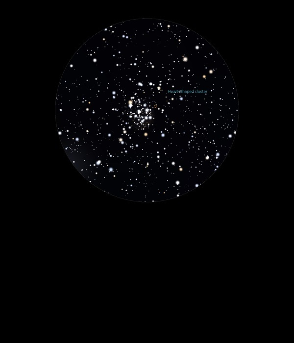

M51

Open Cluster in Monoceros
NGC 2323
Mag 5.9
The Heart Shaped Cluster
Rather sparse Open Cluster
Although known as The Heart Shaped Cluster the heart was not really apparent
Fits neatly into the FOV in 12mm